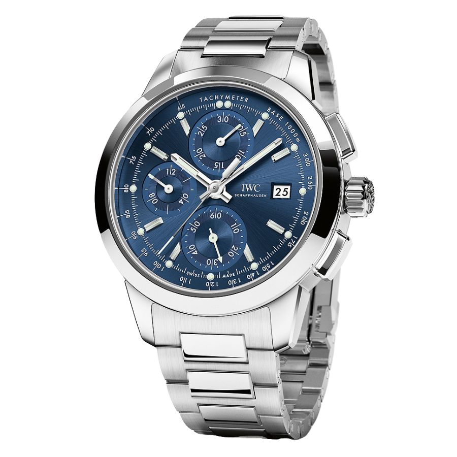

INGENIEUR
Perfection
A watch created with great passion by masters in their craftsmanship with great attention to detail. From us for you.
A watch created with great passion by masters in their craftsmanship with great attention to detail. From us for you.
1
/2